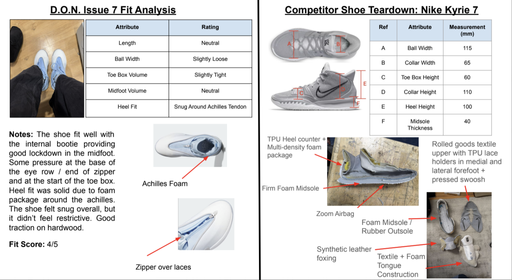
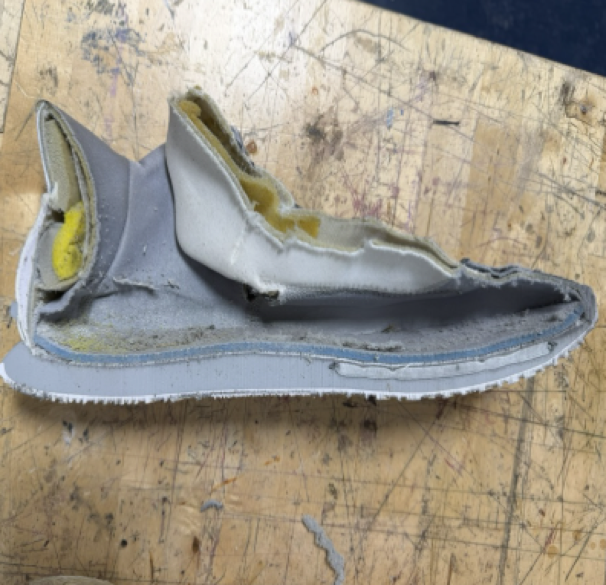
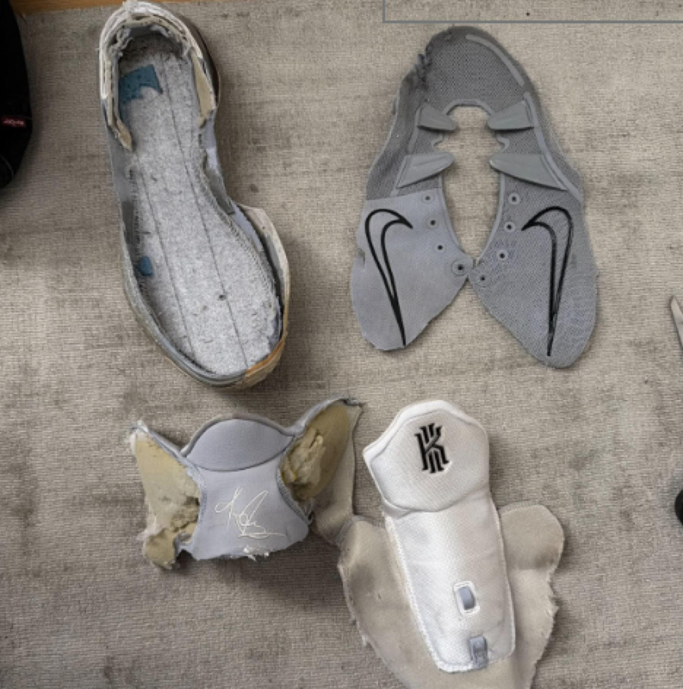
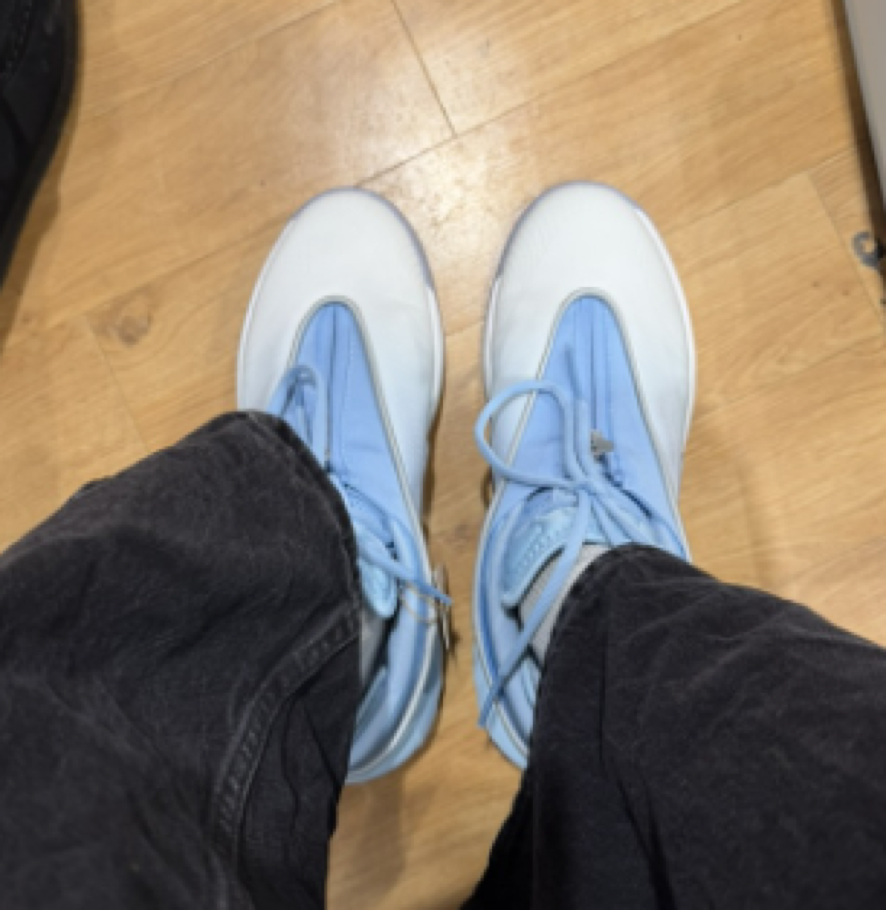

Fit Analysis & Sneaker Teardown
Completed a personal project to better understand the fit and composition of basketball sneakers. Performed the fit analysis with the adidas D.O.N. Issue 7, and tore down the Nike Kyrie 7.
Teardown
The teardown allowed me to separate the butterfly upper, textile and foam bootie, and foam midsole/rubber outsole. During the process, I used a heat gun to weaken the adhesive holding the outsole to the midsole, and used box cutters to separate the bootie and butterfly upper from the shoe, cutting through the strobel lasting. I also used the bandsaw in Brown University's design workshop to cut one of the sneakers in half, revealing inner components like the zoom airbag and TPU heel counter.
Fit Analysis
The shoe fit well with the internal bootie providing good lockdown in the midfoot. Some pressure at the base of the eye row / end of zipper and at the start of the toe box. Heel fit was solid due to foam package around the achilles. The shoe felt snug overall, but it didn't feel restrictive. Good traction on hardwood.



